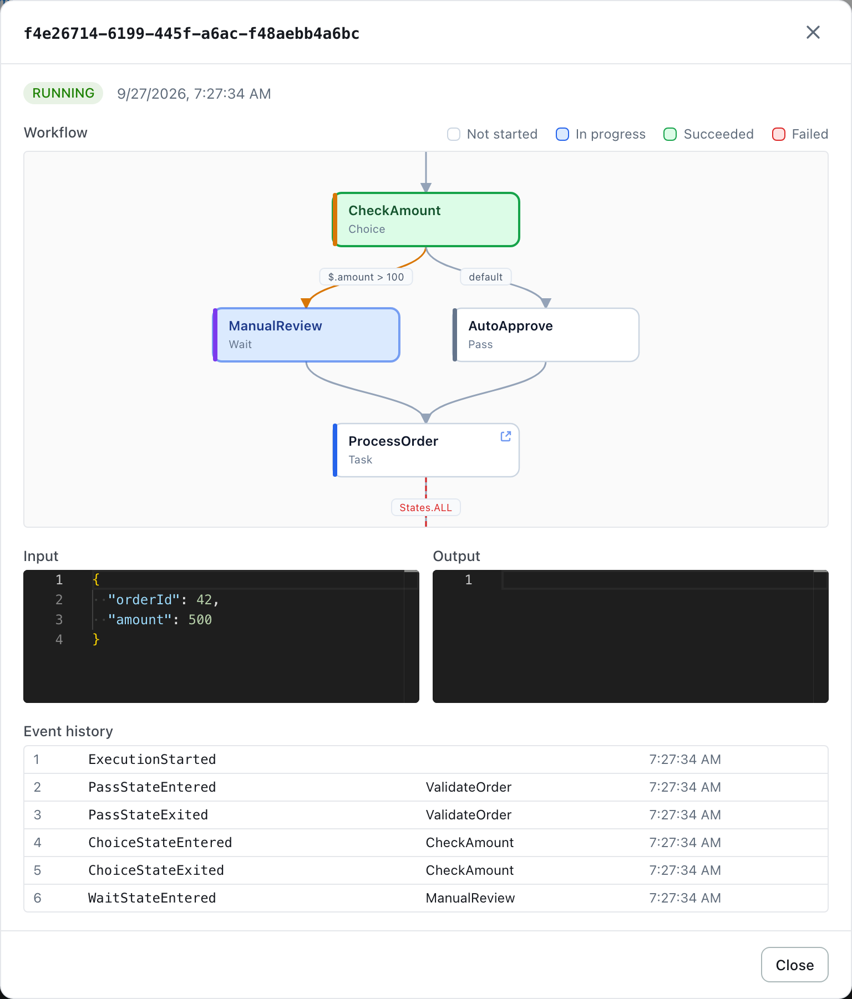
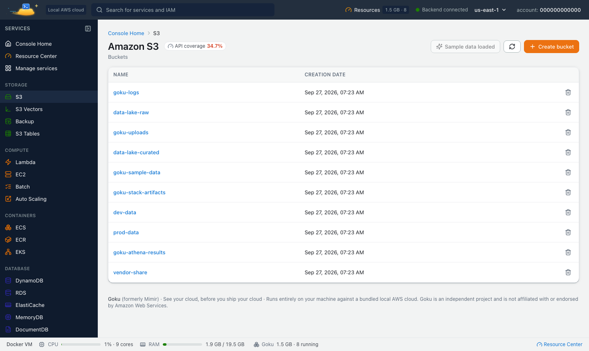

60 AWS service consoles, one image
The bundled web console covers 60 services, and every service page has a one-click “Load sample data” button, so you can explore a populated cloud in under a minute.

AI assistants can now work with your local AWS. Goku serves MCP, so Claude Code, Claude Desktop, Cursor, VS Code and Windsurf can create resources, call any AWS API and read logs on your machine, never real AWS. Connect yours.
Mimir is now Goku, everywhere. Every name is Goku now: the image tanujsoni027/goku, the goku container and command, and GOKU_* settings. Existing installs move over automatically and the old names keep working for now, so start using the goku names.

Goku (formerly Mimir) is a local AWS cloud emulator: 73 AWS-compatible services — S3, Lambda, DynamoDB, RDS, Step Functions, API Gateway, Glue and more — on localhost:4566, with a web console for 60 services on localhost:8080, real container-backed engines, and zero AWS account. Free.
Install Goku What's new in 4.1$ curl -fsSL https://tanuj24.github.io/goku/install.sh | shThen run goku start and open http://localhost:8080 — click “Load sample data” on any console page to explore a populated cloud.
Or run it with Docker directly — see all install options. Needs Docker Desktop on macOS and Windows, or Docker Engine or Docker Desktop on Linux.
Goku 4.1 connects AI assistants to your local AWS. Claude Code, Claude Desktop, Cursor, VS Code, Windsurf and any other MCP client can now work with Goku directly: create and inspect resources, call any AWS API, read logs, take snapshots and inject faults, all against the sandbox on your machine and never real AWS.
Goku serves the Model Context Protocol at http://localhost:8080/mcp, on the console's port, over Streamable HTTP. 25 tools cover status, services, sample data, the Resource Center, logs, snapshots, fault injection, IAM and request journeys, and aws_call calls any operation of the emulated AWS services. Tool hints mark the ones that can delete.
goku CLI 0.5.0 adds goku mcp, a stdio bridge that starts Goku when it isn't running. claude mcp add goku -- goku mcp is all Claude Code needs, and goku mcp config prints the setup for Claude Desktop, Cursor, VS Code and Windsurf.
MCP in the console's top bar shows the endpoint, copy-paste setup for each client, things to ask and every tool. Requests from other websites are refused, and GOKU_MCP=off turns the endpoint off.
Set it up in a minute: connect an AI assistant to Goku, with the setup for every client, the full tool list and how aws_call works.
Mimir is now Goku, everywhere. Goku tells you when a new version is out and updates itself from the console, and everything it keeps, including your databases, lives in a folder on your disk. It also adds AWS Glue 6.0, DynamoDB vector search, AWS Lambda runtime parity, a rebuilt ECS, the IAM Policy Lab, a lightweight start with per-service subscriptions, a Resource Center, real engines behind a dozen more services, and console pages for 33 more services — 60 in total, on a backend of 73.
Every name is Goku now: the image tanujsoni027/goku, the goku container and command, GOKU_* settings, /_goku paths, goku.local host names and the goku-ca.pem file. The site moved to tanuj24.github.io/goku.
goku update, or Update now in the console, renames your mimir container to goku and moves it to the new image, and your data into the data folder.MIMIR_* setting, with the new name to use.The console shows when a new version is out. One click downloads it and replaces the running Goku with the same ports, settings and data; if the new version doesn't come up healthy within 3 minutes, Goku rolls back to the one you had. The check is one download of a static file, with nothing about you sent; GOKU_UPDATE_CHECK=off turns it off.
Buckets, tables, functions and the data of every engine (RDS PostgreSQL databases, OpenSearch, MSK, ECR, DocumentDB, MemoryDB, Amazon MQ and Redshift) live in ~/.goku/data (%LOCALAPPDATA%\Goku\data on Windows). Reset Docker, update or reinstall: start Goku with the same folder and resume where you left off. Existing data moves in by itself.
goku update moves your install to the data folder on the way; goku update --cli updates the CLI itself, verified against its published checksums; goku data shows, opens or migrates the folder. The CLI tells you, at most once a day, when a new Goku or CLI is out.
Install the CLI and run goku update: it saves your state, moves it into the data folder, renames your mimir container to goku and starts the newest Goku on the same ports. Your old mimir-data volume stays as a backup. Using plain Docker? See upgrading an existing install.
Glue 6.0 (Spark 4.1.1, Python 3.13, Java 17) and Glue 5.1, per job or notebook. AWS publishes no Glue 6.0 image, so Goku builds one locally the first time a 6.0 job runs — a one-time step of a few minutes. New jobs default to Glue 5.1, as on AWS.
The VectorIndexes and SearchVectors APIs with cosine, Euclidean and dot-product distance, and a console tab to search by text, by a similar item or by raw vector. Plus a rebuilt item explorer and a PartiQL editor.
Every runtime AWS Lambda supports today — Node.js, Python, Java, .NET, Ruby and provided.al2023 — on arm64 and x86_64, with AWS's lifecycle dates. Also provisioned concurrency, SnapStart, container-image functions and response streaming.
Self-healing services, rolling deployments and a circuit breaker with rollback; health checks, secrets and volumes; ECS Exec from the AWS CLI, Service Connect and AWS Cloud Map; and a browser terminal into running containers.
Answers “if I ship this IAM change, who gains or loses what access, and why?” before you ship it: effective access with evidence, policy drafts you can diff, simulate and size by blast radius, and IAM tests with regression reports — for Goku or, read-only, a real AWS account.
A new installation starts only the core services — S3, DynamoDB, Lambda, SQS, SNS, IAM/STS, CloudWatch, KMS, Secrets Manager and Systems Manager. Subscribe to more, or to a preset such as Containers, Databases or Analytics, on the Services page.
Everything Goku runs — databases, brokers, clusters, functions and build containers — with live memory and CPU. Pause, stop, restart or remove any of it from one place, with a memory budget, idle auto-stop and disk cleanup.
Bedrock through a local Ollama, Redshift and its Data API, Amazon MWAA on real Airflow, EMR Serverless on real Spark, MemoryDB on real Valkey, DocumentDB on real MongoDB and Amazon MQ on real RabbitMQ or ActiveMQ.
60 in total. New pages include Route 53, Elastic Load Balancing, CloudFront, CodeBuild, CodeDeploy, AWS Backup, AWS Config, Bedrock, Cost Explorer, Redshift, Amazon MWAA, CloudTrail, X-Ray and AWS Organizations.
New developer tools, in the console, the API and the goku CLI:
AccessDenied.TestState API, mock configurations and test suites with JUnit reports.goku CLI and a VS Code extension: services, readiness, snapshots, fault injection, IAM and Lambda debugging from your terminal or editor.Also new in 4.0: real engines behind a dozen more services — including Bedrock through a local Ollama, Redshift, Amazon MWAA on real Airflow, EMR Serverless on real Spark, MemoryDB, DocumentDB and Amazon MQ — and console pages for 33 more services, from Route 53 and CloudFront to Cost Explorer and AWS Organizations.
A real-time workflow graph: states color in as the execution progresses, Choice branches show their conditions, and Task nodes deep-link to the local resources they invoke.

A tour of the bundled web console: 27 of its 60 service consoles, grouped the way AWS groups them, plus tools new in Goku 4.0. Click any one to see its page.

Storage · S3 console in Goku
The bundled web console covers 60 services, and every service page has a one-click “Load sample data” button, so you can explore a populated cloud in under a minute.
RDS starts a real PostgreSQL, MySQL or MariaDB container — connect with psql on localhost:5500. ElastiCache and MemoryDB run real Redis or Valkey, DocumentDB runs real MongoDB, Amazon MQ runs real RabbitMQ or ActiveMQ, OpenSearch is the real engine and EKS boots real k3s. Lambda functions run in real runtime containers.
Build REST, HTTP and WebSocket APIs in the console, attach a Lambda integration, and invoke them on localhost seconds later — no deploy pipeline, no waiting.
Real PySpark jobs and interactive notebooks with the real awsglue libraries, Glue 6.0 back to 2.0, with Hudi, Delta Lake and Iceberg. Step Functions Task states really invoke your local Lambdas.
Your buckets, tables, functions and jobs, and the data of every database and broker, live in a folder on your disk. Stop, update, reinstall or reset Docker: start Goku with the same folder and carry on.
Data endpoints live in a dedicated 5500–5659 range, so they never clash with a local Redis, Postgres or Elasticsearch. RDS, ElastiCache and Neptune use the published 5500–5524 ports; the rest bind on your host automatically.
CloudFormation stacks actually provision the buckets, queues and topics in your template, and every container-backed service streams logs to its AWS-convention CloudWatch log group, exactly like the real cloud.
Zero code changes: point your AWS CLI, SDK or app at http://localhost:4566, region us-east-1, with any local credentials such as test / test — or let goku env set it all for you.
Step-by-step walkthroughs with commands you can paste, for the things developers most often run locally.
Install Goku, point the AWS CLI at localhost:4566 and create S3 buckets, DynamoDB tables, SQS queues and Lambda functions on your machine.
Create, invoke and debug functions in real runtime containers, read their CloudWatch logs and stop on breakpoints in VS Code or JetBrains IDEs.
Tables, items, GSI queries, PartiQL, Streams and vector search on localhost, with your data kept between restarts.
Glue 6.0 and 5.1 jobs and notebooks on real Spark with the awsglue libraries, a local Data Catalog and S3.
Give Claude Code, Claude Desktop, Cursor, VS Code or Windsurf 25 tools and any AWS API call on a local sandbox, never your real AWS account.
Only the name. Goku is the same product, renamed in Goku 4.0, where every name became Goku: the image tanujsoni027/goku, the goku container and command, GOKU_* settings, /_goku paths and goku.local hostnames. Existing installs move over automatically, and the old Mimir names keep working for now, so start using the goku names. See old and new names.
Install Goku and point your AWS CLI or SDK at http://localhost:4566, region us-east-1, with any local credentials such as test / test — goku env sets these for you. No account and no sign-up. Once the image and any runtime images your services need are pulled, everything runs on your machine without internet access. Walkthrough: how to run AWS locally.
Yes. Functions run in real runtime containers for every runtime AWS Lambda supports today, with logs, versions, aliases, function URLs and event source mappings. Step through a handler from VS Code, IntelliJ, PyCharm or GoLand. See testing AWS Lambda locally.
Yes. Everything Goku keeps, databases included, lives in a data folder on your disk (~/.goku/data, or %LOCALAPPDATA%\Goku\data on Windows). It survives stops, updates, reinstalls and Docker resets. Environment snapshots can save and restore the whole local cloud.
Yes. The goku CLI installs natively on macOS, Linux and Windows and runs Goku in Docker. The image is multi-arch (arm64 + amd64), so it runs natively on Apple Silicon.
Docker: Docker Desktop on macOS and Windows, and Docker Engine or Docker Desktop on Linux. See all install options.
No. Goku is a local development and testing sandbox — build and iterate locally, then deploy to real AWS for production.